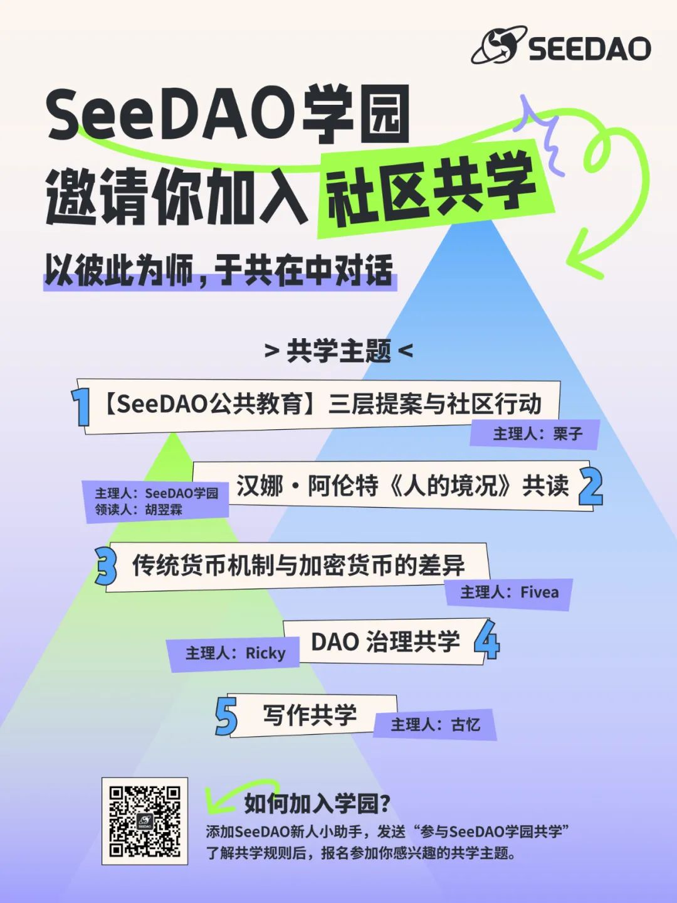

在古希腊，雅典城邦的柏拉图学园是知识的果园，是思想的熔炉，也是对话的广场。
在白皮书中，SeeDAO将自己定义为一座数字城邦：“SeeDAO存在的意义是基于区块链构建一个以追求”好的生活“(即幸福)为目的的社会。它的具体形态是一个由统一的网络空间和分散在不同地域的物理节点所构成的数字城邦。”一座彼此共在，让对话、思想、创造涌现的学园，是良好数字城邦的应有之义。
基于SIP-148 （https://app.seedao.xyz/proposal/thread/48），经S6节点投票通过，”SeeDAO 学园“正式建立。在我的想象中，SeeDAO学园是一个动态的生命体，一个意义的发生场。在这里，每个人都是经验的传播者，每个人都是智慧的敞开者。我们鼓励开放的讨论，鼓励批判性思维，鼓励跨领域的交流。我相信，以彼此为师，于共在中对话，建立更深度的理解与链接，是社区生长创造的必由之路。
经过共学主题的征集投票，主理人招募，以及一个月的共学筹备，学园首批五位共学主理人发出了他们的主题共学，分别是：
【SeeDAO公共教育】三层提案与社区行动
汉娜·阿伦特《人的境况》共读
传统货币机制与加密货币的差异
DAO 治理共学
写作共学
SeeDAO学园邀请你加入，与彼此对话。共学活动的详细介绍见下 （报名加入方式见文末）。
共学活动介绍
【SeeDAO公共教育】三层提案与社区行动
汉娜·阿伦特《人的境况》共读
传统货币机制与加密货币的差异
DAO 治理共学
写作共学
我们期待的共学成员：
对共学主题有兴趣语热情
愿意积极参与共学活动并与他人交流想法
能够承诺并遵守共学活动的时间和规则
学园对话规则：
请尊重他人的观点和建议，保持友好的讨论氛围
若共学成员无故缺席多次讨论，可能影响后续其他共学活动的报名
因讨论时长缘故，部分共学活动有参与人数限制，需经过报名筛选，未入选的成员依然可参与旁听。
学园的对话原则是开放分享，所有聊天记录都会在DC-SeeDAO学园频道同步并公开，请知悉。也欢迎前往SeeDAO Discord（https://discord.gg/seedao-xyz）“SeeDAO学园”频道中查看共学活动的更多信息 & 记录。
如何加入学园：
扫码或输入微信号（seedao2023）添加SeeDAO新人小助手，发送“参与SeeDAO学园共学”。
小助手会将你邀请进学园通知群，请查看群公告了解共学规则，在群内 / Discord 频道填写问卷报名参加你感兴趣的共学。